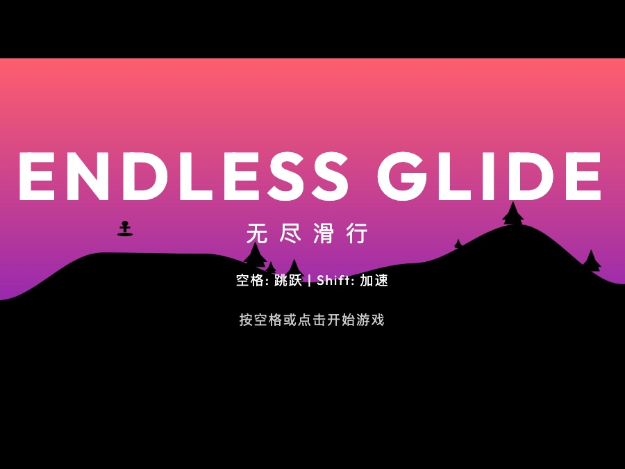

为什么做小游戏？
因为小游戏可以快速暴露产品能力：画面是否有记忆点、交互是否顺手、反馈是否及时、用户是否愿意继续点。 它比一份概念文档更诚实，也更容易让别人感知“这个人真的能把东西做出来”。
当前实验
这个项目说明什么？
它说明我不只停留在观点表达，也愿意把灵感变成可点击、可试玩、可被批评的作品。对 AI 时代的 PM 来说，这种快速造物能力会越来越重要。
Playful Build / Web Games
我会把一些轻量想法快速做成可玩的东西。对我来说，小游戏不是“玩具”，而是验证交互手感、审美判断和 AI 辅助开发速度的低成本实验场。

因为小游戏可以快速暴露产品能力：画面是否有记忆点、交互是否顺手、反馈是否及时、用户是否愿意继续点。 它比一份概念文档更诚实，也更容易让别人感知“这个人真的能把东西做出来”。
它说明我不只停留在观点表达，也愿意把灵感变成可点击、可试玩、可被批评的作品。对 AI 时代的 PM 来说，这种快速造物能力会越来越重要。